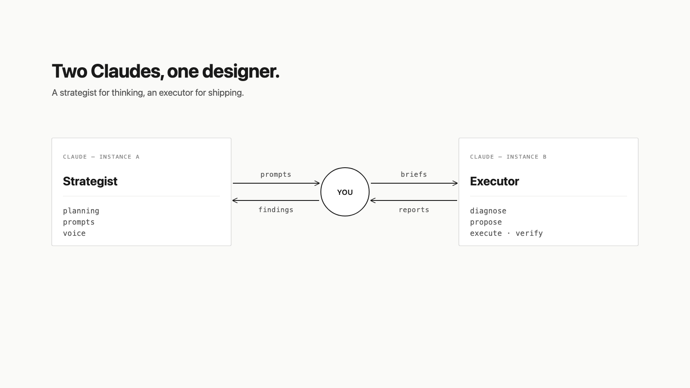
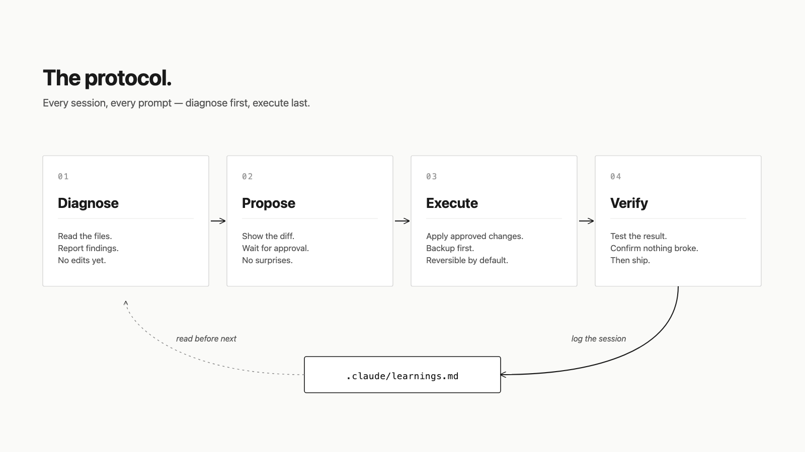
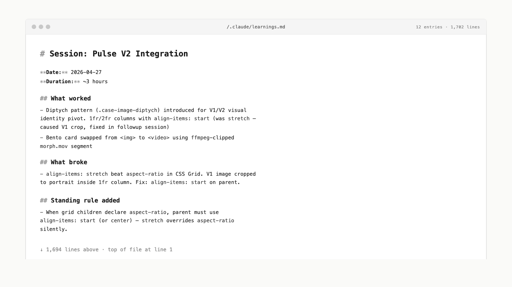

The two-Claude system.
I work with two AI surfaces in parallel, on purpose. They have different jobs.
The first is a strategic chat. This is where I think out loud, plan, write prompts, argue with myself about a design decision, draft case study copy, decide what to ship. Nothing in this chat touches the codebase. Its only job is to slow me down enough to think clearly before anything gets built.
The second is an executor running inside VS Code. It reads the plan, makes the changes, runs the verification, and stops. It doesn't make design decisions. It implements them.
Splitting strategy from execution is the same instinct that drove my work on the LexisNexis token pipeline: separate the layer that decides from the layer that propagates. Designers think in components, not pages. I think in plans, not commands.

The protocol.
Every change I ship follows the same shape. It's not heavy. It just doesn't skip steps.
Diagnose before executing. No edit happens until the current state is read and reported. Word counts, file paths, line numbers, existing class names, all out loud, so I can verify the brief I just wrote isn't operating on stale assumptions. Roughly half the bugs I almost shipped were caught here, before any code changed.
Backup before modifying. Every modifying session creates a timestamped backup folder before touching a single file. The cost is a few kilobytes. The value is that I can revert any decision, at any point, without it being a question.
Propose before applying. For anything bigger than a one-line CSS fix, the change is shown to me first as a complete diff. I approve, adjust, or reject. Then it ships.
Verify after. Word counts, link integrity, image paths, HTML balance, sidebar nav references. Same checks every time. Mechanical. Boring. Catches the asymmetric class on a single Other Work card that nobody else would notice.
Log the session. Every modifying session ends with a structured entry in a learnings file: what was done, what worked, what failed, what I learned. The file is now over a thousand lines long. It's also the most useful design document I own.

Why the log matters.
The learnings file is the part of the system most designers don't have. It's not a changelog. It's institutional memory: the record of every wrong turn, every regression, every “this looked obvious but actually broke production.” When I start a new session, the executor reads it before doing anything. So do I.
The first time the About page hero photo had a stray gray box behind it, I spent twenty minutes debugging. The second time, six weeks later, I fixed it in two minutes, because the log told me exactly which two CSS properties to touch. The third time it regressed, I promoted the rule to a permanent invariant in the project's standing rules and it hasn't broken since.
This is the same instinct as a token system. Solve a problem once, encode the solution as infrastructure, and stop solving it.

What this site is.
This portfolio is a vanilla HTML/CSS/JS site. No framework, no build step, no React. Every line is something I can defend in an interview.
It's also a working artifact of the protocol. The intro animation, the bento grid, the case study layouts, the dark mode, the canvas-rendered footer game. Every piece was planned in chat, executed by the workflow, backed up, verified, and logged. Six weeks of sessions, all preserved.
Why I built it this way.
Two reasons.
The first is honest compounding. Working this way lets me ship at velocities I couldn't match doing the same work by hand. It's the same multiplier I saw on the LexisNexis token pipeline. The right system makes the team faster without compromising the work.
The second is harder to explain to people who haven't tried it. Working this way changes how I think about design. I'm forced to articulate the brief. Forced to verify my assumptions before acting. Forced to revisit my own decisions when the log shows I've made the same call three different ways. The discipline of writing a good prompt is the discipline of designing well: knowing what you want, why you want it, and how you'd know if you got it.
What I'd bring to your team.
This is the system I'd bring to a startup designer #1, #2, or #3 role: a real operating model for AI-augmented design work, a bias toward shipping infrastructure over one-offs, and a process documented well enough that the next person to join the team can pick it up.
If that sounds like the kind of designer you're hiring for, I'd love to talk.